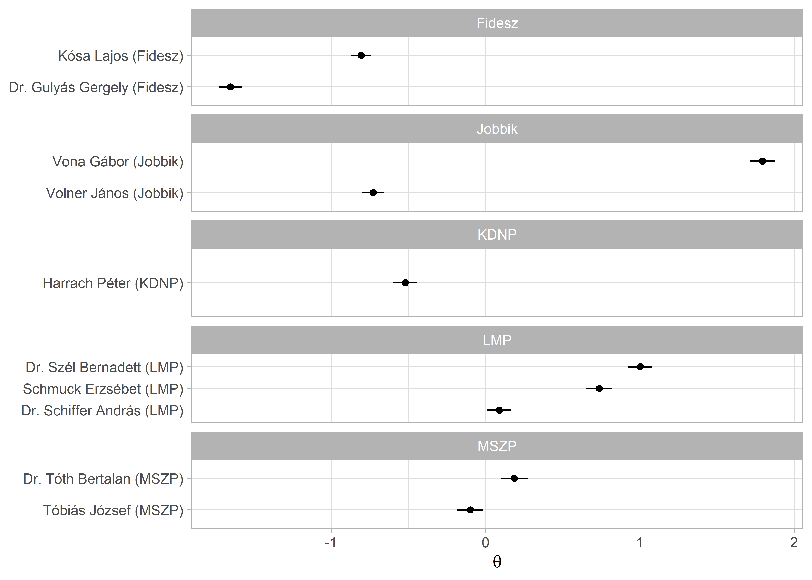

9 Szövegskálázás: felügyelet nélküli és felügyelt megoldások
A szövegskálázás célja a politikai szereplők elhelyezése az ideológiai térben. Ennek felügyelt típusa a wordscores, amely a szótári módszerekhez hasonlóan a szereplőket szavaik alapján helyezi el a politikai térben, úgy hogy az ún.referencia dokumentumok szövegét használja tanító halmazként. A wordscores kiindulópontja, hogy pozíció pontszámokat kell rendelni referencia szövegekhez. A modell számításba veszi szövegek szavainak súlyozott gyakoriságát és a pozíciópontszám valamint a szógyakoriság alapján becsülni meg a korpuszban lévő többi dokumentum pozícióját. (Laver, Benoit, and Garry 2003). A felügyelet nélküli wordfish módszer a skálázás során nem a referencia dokumentumokra támaszkodik, hanem olyan kifejezéseket keres a szövegben, amelyek megkülönböztetik egymástól a politikai spektrum különböző pontjain elhelyezkedő beszélőket. Az IRT-n (item response theory) alapuló módszer azt feltételezi, hogy a politikusok egy kevés dimenziós politikai térben mozognak, amely tér leírható az i politikus \(\theta_1\) paraméterével. Egy politikus (vagy párt) ezen a téren elfoglalt helyzete pedig befolyásolja a szavak szövegekben történő használatát. A módszer erőssége, hogy kevés erőforrás-befektetéssel megbízható becsléseket ad, ha a szövegek valóban az ideológiák mentén különböznek, tehát ha a szereplők erősen ideológiai tartalamú diskurzust folytatnak. Alkalmazásakor azonban tudnunk kell, hogy a módszer nem képes kezelni, hogy a szövegek között nem csak ideológiai különbség lehet. Mivel a modell nem felügyelt, ezért nehéz garantálni, hogy valóban megbízhatóan azonosítja a szereplők elhelyezkedését a politikai térben, így az eredményeket mindenképpen körültekintően kell validálni. (Slapin and Proksch 2008; Hjorth et al. 2015; Grimmer and Stewart 2013)
library(readr)
library(dplyr)
library(stringr)
library(ggplot2)
library(quanteda)
library(quanteda.textmodels)A skálázási algoritmusokat egy kis korpuszon mutatjuk be. A minta dokumentumok a 2014-2018 parlamenti ciklusban a Magyar Országgyűlésben frakcióvezető politikusok egy-egy véletlenszerűen kiválasztott napirend előtti felszólalásai. Ebben a ciklusban összesen 11 frakcióvezetője volt a két kormánypárti és öt ellenzéki frakciónak.[^skala-1] A dokumentumokon először elvégeztük a szokásos előkészítési lépéseket. [^skala-1]: A mintába nem került be Rogán Antal, akinek csak egy darab napirend előtti felszólalása volt.
parl_beszedek <- read_csv("data/ps_sample.csv")
beszedek_tiszta <- parl_beszedek %>%
mutate(
text = str_remove_all(string = text, pattern = "[:cntrl:]"),
text = str_remove_all(string = text, pattern = "[:punct:]"),
text = str_remove_all(string = text, pattern = "[:digit:]"),
text = str_to_lower(text),
text = str_trim(text),
text = str_squish(text)
)A Wordfish és Wordscores algoritmus is ugyanazt a kiinduló corpus és dfm objektumot használja, amit a szokásos módon a quanteda csomag corpus() függvényével hozunk létre. A leíró statisztikai táblázatban látszik, hogy a beszédek hosszúsága nem egységes, a leghosszabb 10267 szavas, a legrövidebb pedig 1976. Az átlagos dokumentum hossz az 5136. A korpusz szemléltető célú, alaposabb elemzéshez hosszabb és/vagy több dokumentummal érdemes dolgoznunk.
beszedek_corpus <- corpus(beszedek_tiszta)
summary(beszedek_corpus)
#> Corpus consisting of 10 documents, showing 10 documents:
#>
#> Text Types Tokens Sentences
#> text1 442 819 1
#> text2 354 607 1
#> text3 426 736 1
#> text4 314 538 1
#> text5 354 589 1
#> text6 333 538 1
#> text7 344 559 1
#> text8 352 628 1
#> text9 317 492 1
#> text10 343 600 1
#> id felszolalo
#> 20142018_024_0002_0002 Vona Gábor (Jobbik)
#> 20142018_055_0002_0002 Dr. Schiffer András (LMP)
#> 20142018_064_0002_0002 Dr. Szél Bernadett (LMP)
#> 20142018_115_0002_0002 Tóbiás József (MSZP)
#> 20142018_158_0002_0002 Schmuck Erzsébet (LMP)
#> 20142018_172_0002_0002 Dr. Tóth Bertalan (MSZP)
#> 20142018_206_0002_0002 Volner János (Jobbik)
#> 20142018_212_0002_0002 Kósa Lajos (Fidesz)
#> 20142018_236_0002_0002 Harrach Péter (KDNP)
#> 20142018_249_0002_0002 Dr. Gulyás Gergely (Fidesz)
#> part
#> Jobbik
#> LMP
#> LMP
#> MSZP
#> LMP
#> MSZP
#> Jobbik
#> Fidesz
#> KDNP
#> FideszA koprusz létrehozása után elkészítjük a dfm mátrixot, amelyből eltávolítjuk a magyar stopszvakat a quantedabeépített szótárának segítségével.
beszedek_dfm <- beszedek_corpus %>%
tokens() %>%
tokens_remove(stopwords("hungarian")) %>%
dfm()9.1 Wordfish
A wordfish felügyelet nélküli skálázást a quanteda_textmodels csomagban implementált textmodel_wordfish() függvény fogja végezni. A megadott dir = c(1, 2) paraméterrel a két dokumentum relatív \(\theta\) értékét tudjuk rögzíteni, mégpedig úgy hogy \(\theta_{dir1} < \theta_{dir2}\). Alapbeállításként az első és utolsó dokumentumot teszi ide be az algoritmus. A lenti példánál mi a pártpozíciók alapján a Jobbikos Vona Gábor és az LMP-s Schiffer András egy-egy beszédét használtuk. A summary() használható az illesztett modellel, és a dokumentumonkénti \(\theta\) koefficienst tudjuk így megnézni.
beszedek_wf <- textmodel_wordfish(beszedek_dfm, dir = c(2, 1))
summary(beszedek_wf)
#>
#> Call:
#> textmodel_wordfish.dfm(x = beszedek_dfm, dir = c(2, 1))
#>
#> Estimated Document Positions:
#> theta se
#> text1 1.79474 0.04219
#> text2 0.08931 0.04001
#> text3 1.00137 0.03908
#> text4 -0.09988 0.04232
#> text5 0.73596 0.04355
#> text6 0.18572 0.04452
#> text7 -0.72832 0.03590
#> text8 -0.80587 0.03358
#> text9 -0.52028 0.04005
#> text10 -1.65273 0.03794
#>
#> Estimated Feature Scores:
#> vona gábor jobbik tisztelt elnök úr
#> beta 3.675 2.321 1.9710 0.2391 -0.11149 0.02755
#> psi -4.980 -2.734 -0.7531 0.4566 -0.05693 0.28721
#> országgyulés tegnapi napon helyen tartottak
#> beta 1.2286 4.372 2.991 3.103 3.675
#> psi -0.6705 -5.314 -3.009 -2.630 -4.980
#> idoközi önkormányzati választásokat két
#> beta 3.675 3.675 3.675 1.1894
#> psi -4.980 -4.980 -4.980 -0.9439
#> érdekelt recsken ózdon október nyertünk
#> beta 3.675 4.372 4.774 3.405 3.675
#> psi -4.980 -5.314 -5.545 -3.230 -4.980
#> örömmel közlöm ország közvéleményével amúgy
#> beta 3.675 3.675 1.7470 3.675 3.675
#> psi -4.980 -4.980 -0.3643 -4.980 -4.980
#> is tudnak mindkét jobbikos polgármester
#> beta 0.9128 1.433 3.675 3.675 3.675
#> psi 1.8345 -1.737 -4.980 -4.980 -4.980Amennyiben szeretnénk a szavak szintjén is megnézni a \(\beta\) (a szavakhoz társított súly, ami a relatív fontosságát mutatja) és \(\psi\) (a szó fix effekt, ami az eltérő szófrekvencia kezeléséért felelős) koefficiensekhez, akkor a beszedek_wf objektumban tárolt értékeket egy data frame-be tudjuk bemásolni. A dokumentumok hosszára és a szófrekvenciát figyelembe véve, a negatív \(\beta\) értékű szavakat gyakrabban használják a negatív \(\theta\) koefficienssel rendelkező politikusok.
szavak_wf <- data.frame(
word = beszedek_wf$features,
beta = beszedek_wf$beta,
psi = beszedek_wf$psi
)
szavak_wf %>%
arrange(beta) %>%
head(n = 15)
#> word beta psi
#> 1 czeglédy -5.900663 -6.222629
#> 2 csaba -5.769959 -6.151399
#> 3 human -5.438681 -5.975155
#> 4 operator -5.438681 -5.975155
#> 5 zrt -5.216835 -5.860931
#> 6 fizette -4.927204 -5.717002
#> 7 gyanú -4.927204 -5.717002
#> 8 szocialista -4.927204 -5.717002
#> 9 elkövetett -4.509192 -5.521276
#> 10 tárgya -4.509192 -5.521276
#> 11 céghálózat -4.509192 -5.521276
#> 12 diákok -4.509192 -5.521276
#> 13 májusi -4.509192 -5.521276
#> 14 júniusi -4.509192 -5.521276
#> 15 büntetoeljárás -4.509192 -5.521276Ez a pozitív értékekre is igaz.
szavak_wf %>%
arrange(desc(beta)) %>%
head(n = 15)
#> word beta psi
#> 1 nemzetközi 5.057078 -5.720709
#> 2 önöknek 4.977502 -4.778607
#> 3 ózdon 4.773523 -5.544626
#> 4 kétharmados 4.773523 -5.544626
#> 5 igenis 4.773523 -5.544626
#> 6 választási 4.773523 -5.544626
#> 7 geopolitikai 4.773523 -5.544626
#> 8 ártatlanság 4.773523 -5.544626
#> 9 vélelme 4.773523 -5.544626
#> 10 tegnapi 4.372320 -5.314088
#> 11 recsken 4.372320 -5.314088
#> 12 lássuk 4.372320 -5.314088
#> 13 tolünk 4.372320 -5.314088
#> 14 janiczak 4.372320 -5.314088
#> 15 szavazattal 4.372320 -5.314088Az eredményeinket mind a szavak és mind a dokumentumok szintjén tudjuk vizualizálni. Elsőként a klasszikus “Eiffel-torony” ábrát reprodukáljuk, ami a szavak gyakorisága és skálára gyakorolt befolyásának az illusztrálására szolgál. Ehhez a már elkészült szavak_wf data framet és a ggplot2 csomagot fogjuk használni. Mivel a korpuszunk nagyon kicsi ezért csak 2410 kifejezést fogunk ábrázolni. Ennek ellenére a lényeg kirajzolódik a lenti ábrán is.39
Kihasználhatjuk, hogy a ggplot ábra definiálása közben a felhasznált bemeneti data frame-t különböző szempontok alapján lehet szűrni. így ábrázolni tudjuk a gyakran használt ám semleges szavakat (magas \(\psi\), alacsony \(\beta\)), illetve a ritkább de meghatározóbb szavakat (magas \(\beta\), alacsony \(\psi\)).
ggplot(szavak_wf, aes(x = beta, y = psi)) +
geom_point(color = "grey") +
geom_text(
data = filter(szavak_wf, beta > 5 | beta < -4.5 | psi > 0),
aes(beta, psi, label = word),
alpha = 0.7
) +
labs(
x = expression(beta),
y = expression(psi)
)
A dokumentumok szintjén is érdemes megvizsgálni az eredményeket. Ehhez a dokumentum szintű paramétereket fogjuk egy data framebe gyűjteni: a \(\theta\) ideológiai pozíciót, illetve a beszélő nevét. A vizualizáció kedvéért a párttagságot is hozzáadjuk. A data frame összerakása után az alsó és felső határát is kiszámoljuk a konfidencia intervallumnak és azt is ábrázoljuk.
dokumentumok_wf <- data.frame(
speaker = beszedek_wf$x@docvars$felszolalo,
part = beszedek_wf$x@docvars$part,
theta = beszedek_wf$theta,
theta_se = beszedek_wf$se.theta
) %>%
mutate(
lower = theta - 1.96 * theta_se,
upper = theta + 1.96 * theta_se
)
ggplot(dokumentumok_wf, aes(theta, reorder(speaker, theta))) +
geom_point() +
geom_errorbarh(aes(xmin = lower, xmax = upper), height = 0) +
labs(
y = NULL,
x = expression(theta)
) 
A párt metaadattal összehasonlíthatjuk az egy párthoz tartozó frakcióvezetők értékeit a facet_wrap() használatával. Figyeljünk arra hogy az y tengelyen szabadon
ggplot(dokumentumok_wf, aes(theta, reorder(speaker, theta))) +
geom_point() +
geom_errorbarh(aes(xmin = lower, xmax = upper), height = 0) +
labs(
y = NULL,
x = expression(theta)
) +
facet_wrap(~part, ncol = 1, scales = "free_y")
9.2 Wordscores
A modell illesztést a wordfish-ez hasonlóan a quanteda.textmodels csomagban található textmodel_wordscores() függvény végzi. A kiinduló dfm ugyanaz mint amit a fejezet elején elkészítettünk, a beszedek_dfm.
A referencia pontokat dokumentumváltozóként hozzáadjuk a dfm-hez a refrencia_pont oszlopot, ami NA értéket kap alapértelmezetten. A kiválasztott referencia dokumentumoknál pedig egyenként hozzáadjuk az értékeket. Erre több megoldás is van, az egyszerűbb út, hogy az egyik és másik végletet a -1; 1 intervallummal jelöljük. Ennek a lehetséges alternatívája, hogy egy külső, már validált forrást használunk. Pártok esetén ilyen lehet a Chapel Hill szakértői kérdőívének a pontszámai, a Manifesto projekt által kódolt jobb-bal (rile) dimenzió. A lenti példánál mi maradunk az egyszerűbb bináris kódolásnál. A wordfish eredményt alapul véve a két referencia pont a Gulyás Gergely és Szél Bernadett beszédei lesznek.40 Ezek a 3. és 10. dokumentumok.
docvars(beszedek_dfm, "referencia_pont") <- NA
docvars(beszedek_dfm, "referencia_pont")[3] <- -1
docvars(beszedek_dfm, "referencia_pont")[10] <- 1
docvars(beszedek_dfm)
#> id
#> 1 20142018_024_0002_0002
#> 2 20142018_055_0002_0002
#> 3 20142018_064_0002_0002
#> 4 20142018_115_0002_0002
#> 5 20142018_158_0002_0002
#> 6 20142018_172_0002_0002
#> 7 20142018_206_0002_0002
#> 8 20142018_212_0002_0002
#> 9 20142018_236_0002_0002
#> 10 20142018_249_0002_0002
#> felszolalo part
#> 1 Vona Gábor (Jobbik) Jobbik
#> 2 Dr. Schiffer András (LMP) LMP
#> 3 Dr. Szél Bernadett (LMP) LMP
#> 4 Tóbiás József (MSZP) MSZP
#> 5 Schmuck Erzsébet (LMP) LMP
#> 6 Dr. Tóth Bertalan (MSZP) MSZP
#> 7 Volner János (Jobbik) Jobbik
#> 8 Kósa Lajos (Fidesz) Fidesz
#> 9 Harrach Péter (KDNP) KDNP
#> 10 Dr. Gulyás Gergely (Fidesz) Fidesz
#> referencia_pont
#> 1 NA
#> 2 NA
#> 3 -1
#> 4 NA
#> 5 NA
#> 6 NA
#> 7 NA
#> 8 NA
#> 9 NA
#> 10 1A lenti wordscore modell specifikáció követi a Laver, Benoit, and Garry (2003) - ben leírtakat.
beszedek_ws <- textmodel_wordscores(
x = beszedek_dfm,
y = docvars(beszedek_dfm, "referencia_pont"),
scale = "linear",
smooth = 0
)
summary(beszedek_ws, 10)
#>
#> Call:
#> textmodel_wordscores.dfm(x = beszedek_dfm, y = docvars(beszedek_dfm,
#> "referencia_pont"), scale = "linear", smooth = 0)
#>
#> Reference Document Statistics:
#> score total min max mean median
#> text1 NA 486 0 18 0.2017 0
#> text2 NA 395 0 12 0.1639 0
#> text3 -1 439 0 12 0.1822 0
#> text4 NA 330 0 7 0.1369 0
#> text5 NA 360 0 8 0.1494 0
#> text6 NA 328 0 5 0.1361 0
#> text7 NA 349 0 5 0.1448 0
#> text8 NA 387 0 10 0.1606 0
#> text9 NA 307 0 13 0.1274 0
#> text10 1 383 0 8 0.1589 0
#>
#> Wordscores:
#> (showing first 10 elements)
#> tisztelt elnök úr országgyulés
#> -0.07547 0.39255 0.06813 0.06813
#> ország is sot nemhogy
#> -1.00000 -0.19859 -1.00000 -1.00000
#> tette fidesz
#> -1.00000 1.00000Az illesztett wordscores modellünkkel ezek után már meg tudjuk becsülni a korpuszban lévő többi dokumentum pozícióját. Ehhez az R beépített predict() megoldását használjuk. A kiegészítő opciókkal a konfidencia intervallum alsó és felső határát is meg tudjuk becsülni, ami jól jön hogyha szeretnénk ábrázolni az eredményt.
beszedek_ws_pred <- predict(
beszedek_ws,
newdata = beszedek_dfm,
interval = "confidence")
beszedek_ws_pred <- as.data.frame(beszedek_ws_pred$fit)
beszedek_ws_pred
#> fit lwr upr
#> text1 -0.489860579 -0.62138707 -0.35833409
#> text2 -0.234609623 -0.39658117 -0.07263807
#> text3 -0.909048451 -0.93507086 -0.88302605
#> text4 -0.296528588 -0.47539855 -0.11765863
#> text5 -0.259074418 -0.44948427 -0.06866457
#> text6 0.006320468 -0.23056645 0.24320738
#> text7 0.165042014 -0.06144022 0.39152425
#> text8 -0.077739857 -0.27645536 0.12097565
#> text9 -0.123985348 -0.31176579 0.06379509
#> text10 0.909048451 0.87934394 0.93875296A kapott modellünket a wordfishez hasonlóan tudjuk ábrázolni, miután a beszedek_ws_pred objektumból egy data framet csinálunk és a ggplot2-vel elkészítjük a vizualizációt. A dokumentumok_ws két részből áll össze. Először a wordscores modell objektumunkból a frakcióvezetők neveit és pártjaikat emeljük ki (kicsit körülményes a dolog mert egy komplexebb objektumban tárolja őket a quanteda, de az str() függvény tud segíteni ilyen esetekben). A dokumentumok becsült pontszámait pedig a beszedek_ws_pred objektumból készített data frame hozzácsatolásával tesszük meg. Ehhez a dplyr csomag bind_cols függvényét használjuk. Fontos, hogy itt teljesen biztosnak kell lennünk abban, hogy a sorok a két data frame esetében ugyanarra a dokumentumra vonatkoznak.
dokumentumok_ws <- data.frame(
speaker = beszedek_ws$x@docvars$felszolalo,
part = beszedek_ws$x@docvars$part
)
dokumentumok_ws <- bind_cols(dokumentumok_ws, beszedek_ws_pred)
dokumentumok_ws
#> speaker part
#> text1 Vona Gábor (Jobbik) Jobbik
#> text2 Dr. Schiffer András (LMP) LMP
#> text3 Dr. Szél Bernadett (LMP) LMP
#> text4 Tóbiás József (MSZP) MSZP
#> text5 Schmuck Erzsébet (LMP) LMP
#> text6 Dr. Tóth Bertalan (MSZP) MSZP
#> text7 Volner János (Jobbik) Jobbik
#> text8 Kósa Lajos (Fidesz) Fidesz
#> text9 Harrach Péter (KDNP) KDNP
#> text10 Dr. Gulyás Gergely (Fidesz) Fidesz
#> fit lwr upr
#> text1 -0.489860579 -0.62138707 -0.35833409
#> text2 -0.234609623 -0.39658117 -0.07263807
#> text3 -0.909048451 -0.93507086 -0.88302605
#> text4 -0.296528588 -0.47539855 -0.11765863
#> text5 -0.259074418 -0.44948427 -0.06866457
#> text6 0.006320468 -0.23056645 0.24320738
#> text7 0.165042014 -0.06144022 0.39152425
#> text8 -0.077739857 -0.27645536 0.12097565
#> text9 -0.123985348 -0.31176579 0.06379509
#> text10 0.909048451 0.87934394 0.93875296A lenti példánál a párton belüli bontást illusztráljuk, a facet_wrap() segítségével.
ggplot(dokumentumok_ws, aes(fit, reorder(speaker, fit))) +
geom_point() +
geom_errorbarh(aes(xmin = lwr, xmax = upr), height = 0) +
labs(
y = NULL,
x = "Wordscore"
) +
facet_wrap(~part, ncol = 1, scales = "free_y")
A
quanteda.textplotscsomag több megoldást is kínál az ábrák elkészítésére. Mivel ezek a megoldások kifejezetten a quanteda elemzések ábrázolására készültek, ezért rövid egysoros függvényekkel tudunk gyorsan ábrákat készíteni. A hátrányuk, hogy kevésbé tudjuk “személyre szabni” az ábráinkat, mint aggplot2példák esetében. Aquanteda.textplotsmegoldásokat ezen a linken demonstrálják a csomag készítői: https://quanteda.io/articles/pkgdown/examples/plotting.html↩︎Azért nem a Vona Gábor beszédét választottuk, mert az gyaníthatóan egy kiugró érték ami nem reprezentálja a sokaságot megfelelően.↩︎